Books
What I’ve been reading
Every book on my read shelf at Goodreads, grouped into recurring themes. Search it, filter it, or let chance pick one.
186 books, 6 recurring themes
One mark = one book45% fiction & poetry.
Of the grouped nonfiction, 76% explores how people think, make things, and organize society.
186 books read
- Hillbilly Elegy: A Memoir of a Family and Culture in CrisisJ.D. Vance Hillbilly Elegy: A Memoir of a Family and Culture in Crisis
- Dopamine Nation: Finding Balance in the Age of IndulgenceAnna Lembke Dopamine Nation: Finding Balance in the Age of Indulgence
- Boom: Bubbles and the End of StagnationByrne Hobart Boom: Bubbles and the End of Stagnation
-
Continuous Discovery Habits: Discover Products that Create Customer Value and Business ValueTeresa Torres
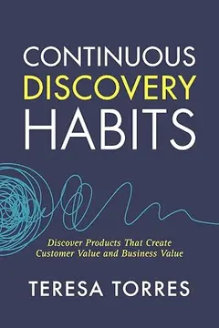
Continuous Discovery Habits: Discover Products that Create Customer Value and Business Value - AbundanceEzra Klein Abundance
- Einstein: His Life and UniverseWalter Isaacson Einstein: His Life and Universe
- The Story of Philosophy: The Lives and Opinions of the World's Greatest PhilosophersWill Durant The Story of Philosophy: The Lives and Opinions of the World's Greatest Philosophers
- Breakneck: China's Quest to Engineer the FutureDan Wang Breakneck: China's Quest to Engineer the Future
-
Indistractable: How to Control Your Attention and Choose Your LifeNir Eyal
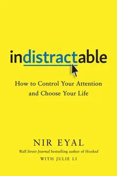
Indistractable: How to Control Your Attention and Choose Your Life - The Molecule of More: How a Single Chemical in Your Brain Drives Love, Sex, and Creativity—and Will Determine the Fate of the Human RaceDaniel Z. Lieberman The Molecule of More: How a Single Chemical in Your Brain Drives Love, Sex, and Creativity—and Will Determine the Fate of the Human Race
- Apple in China: The Capture of the World's Greatest CompanyPatrick McGee Apple in China: The Capture of the World's Greatest Company
-
Project Hail MaryAndy Weir
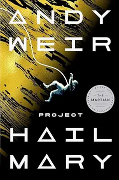
Project Hail Mary - The Anxious Generation: How the Great Rewiring of Childhood Caused an Epidemic of Mental IllnessJonathan Haidt The Anxious Generation: How the Great Rewiring of Childhood Caused an Epidemic of Mental Illness
-
Outlive: The Science & Art of LongevityPeter Attia
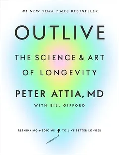
Outlive: The Science & Art of Longevity -
Dance Dance DanceHaruki Murakami
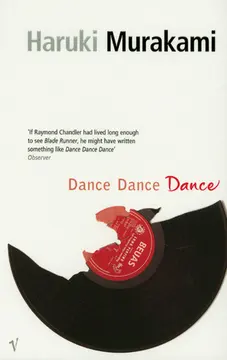
Dance Dance Dance -
Hooked: How to Build Habit-Forming ProductsNir Eyal
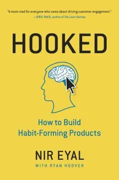
Hooked: How to Build Habit-Forming Products -
The Sovereign Individual: Mastering the Transition to the Information AgeJames Dale Davidson
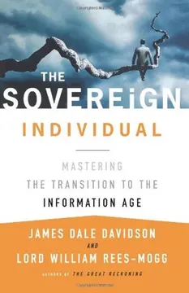
The Sovereign Individual: Mastering the Transition to the Information Age -
Inspired: How to Create Tech Products Customers LoveMarty Cagan
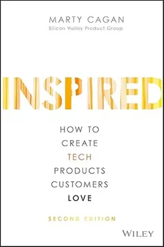
Inspired: How to Create Tech Products Customers Love - Four QuartetsT.S. Eliot Four Quartets
-
Tomorrow, and Tomorrow, and TomorrowGabrielle Zevin
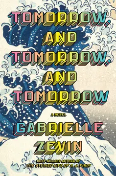
Tomorrow, and Tomorrow, and Tomorrow - Why We Sleep: Unlocking the Power of Sleep and DreamsMatthew Walker Why We Sleep: Unlocking the Power of Sleep and Dreams
-
Finite and Infinite Games: A Vision of Life as Play and PossibilityJames P. Carse
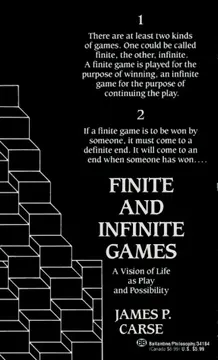
Finite and Infinite Games: A Vision of Life as Play and Possibility -
The Life-Changing Magic of Tidying Up: The Japanese Art of Decluttering and OrganizingMarie Kondō
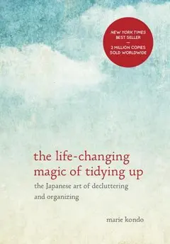
The Life-Changing Magic of Tidying Up: The Japanese Art of Decluttering and Organizing - The Straussian MomentPeter Thiel The Straussian Moment
-
Bird by BirdAnne Lamott
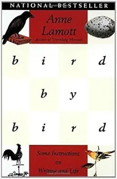
Bird by Bird - Make Something WonderfulSteve Jobs Make Something Wonderful
- The VegetarianHan Kang The Vegetarian
-
The Network State: How To Start a New CountryBalaji S. Srinivasan
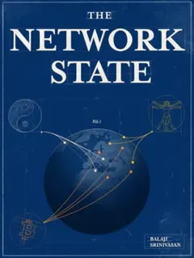
The Network State: How To Start a New Country -
Chaos: Making a New ScienceJames Gleick
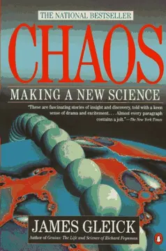
Chaos: Making a New Science - The Age of AI and Our Human FutureHenry Kissinger The Age of AI and Our Human Future
-
The Da Vinci Code (Robert Langdon, #2)Dan Brown
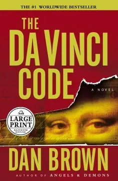
The Da Vinci Code (Robert Langdon, #2) -
The Almanack of Naval Ravikant: A Guide to Wealth and HappinessEric Jorgenson
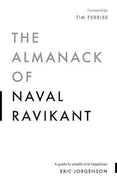
The Almanack of Naval Ravikant: A Guide to Wealth and Happiness -
The Anthropocene Reviewed: Essays on a Human-Centered PlanetJohn Green
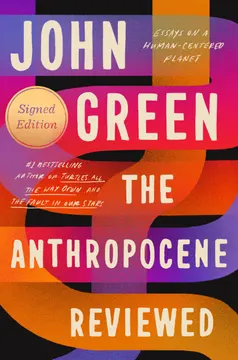
The Anthropocene Reviewed: Essays on a Human-Centered Planet - Angels & Demons (Robert Langdon, #1)Dan Brown Angels & Demons (Robert Langdon, #1)
- Notes from Underground (The Unabridged Garnett Translation)Fyodor Dostoevsky Notes from Underground (The Unabridged Garnett Translation)
- Seeing Like a State: How Certain Schemes to Improve the Human Condition Have FailedJames C. Scott Seeing Like a State: How Certain Schemes to Improve the Human Condition Have Failed
-
Thinking in Bets: Making Smarter Decisions When You Don't Have All the FactsAnnie Duke
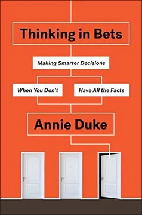
Thinking in Bets: Making Smarter Decisions When You Don't Have All the Facts - American Prometheus: The Triumph and Tragedy of J. Robert OppenheimerKai Bird American Prometheus: The Triumph and Tragedy of J. Robert Oppenheimer
-
Build: An Unorthodox Guide to Making Things Worth MakingTony Fadell
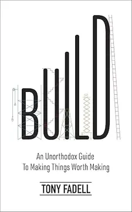
Build: An Unorthodox Guide to Making Things Worth Making - "Surely You're Joking, Mr. Feynman!": Adventures of a Curious CharacterRichard P. Feynman "Surely You're Joking, Mr. Feynman!": Adventures of a Curious Character
- Why Nations Fail: The Origins of Power, Prosperity, and PovertyDaron Acemoğlu Why Nations Fail: The Origins of Power, Prosperity, and Poverty
- 1984George Orwell 1984
- 1Q84 (1Q84, #1-3)Haruki Murakami 1Q84 (1Q84, #1-3)
-
Don't Make Me Think, Revisited: A Common Sense Approach to Web Usability (Voices That Matter)Steve Krug
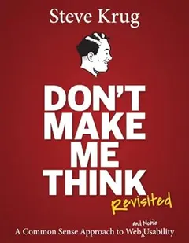
Don't Make Me Think, Revisited: A Common Sense Approach to Web Usability (Voices That Matter) -
Made to Stick: Why Some Ideas Survive and Others DieChip Heath
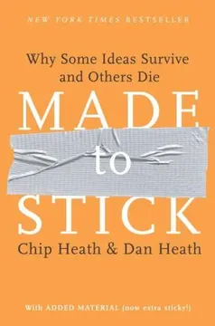
Made to Stick: Why Some Ideas Survive and Others Die - Ready Player One (Ready Player One, #1)Ernest Cline Ready Player One (Ready Player One, #1)
-
Sapiens: A Brief History of HumankindYuval Noah Harari
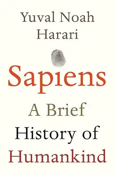
Sapiens: A Brief History of Humankind -
Homo Deus: A History of TomorrowYuval Noah Harari
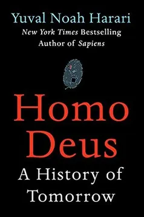
Homo Deus: A History of Tomorrow - The Information: A History, a Theory, a FloodJames Gleick The Information: A History, a Theory, a Flood
- Antifragile: Things That Gain from DisorderNassim Nicholas Taleb Antifragile: Things That Gain from Disorder
-
The Innovators: How a Group of Hackers, Geniuses and Geeks Created the Digital RevolutionWalter Isaacson
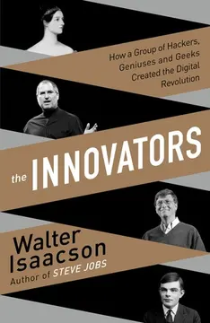
The Innovators: How a Group of Hackers, Geniuses and Geeks Created the Digital Revolution -
The Three-Body Problem (Remembrance of Earth’s Past, #1)Liu Cixin
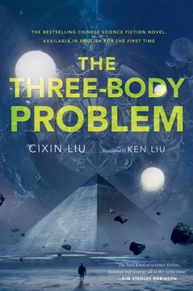
The Three-Body Problem (Remembrance of Earth’s Past, #1) -
Out of Your MindAlan W. Watts
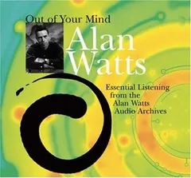
Out of Your Mind -
Jobs to be Done: Theory to PracticeAnthony W. Ulwick
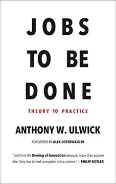
Jobs to be Done: Theory to Practice -
The Lean StartupEric Ries
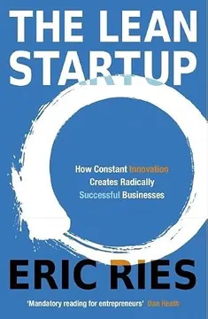
The Lean Startup -
On Writing Well: The Classic Guide to Writing NonfictionWilliam Zinsser
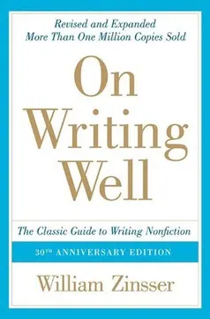
On Writing Well: The Classic Guide to Writing Nonfiction - Wonder (Wonder, #1)R.J. Palacio Wonder (Wonder, #1)
- Breasts and EggsMieko Kawakami Breasts and Eggs
- Shoe Dog: A Memoir by the Creator of NikePhil Knight Shoe Dog: A Memoir by the Creator of Nike
- Benjamin Franklin: An American LifeWalter Isaacson Benjamin Franklin: An American Life
-
When Breath Becomes AirPaul Kalanithi
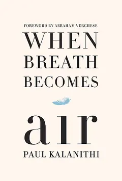
When Breath Becomes Air -
Leonardo da VinciWalter Isaacson
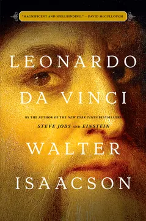
Leonardo da Vinci - Genius: The Life and Science of Richard FeynmanJames Gleick Genius: The Life and Science of Richard Feynman
- Poor Charlie's Almanack: The Wit and Wisdom of Charles T. MungerCharles T. Munger Poor Charlie's Almanack: The Wit and Wisdom of Charles T. Munger
- Thinking In Systems: A PrimerDonella H. Meadows Thinking In Systems: A Primer
- Born a Crime: Stories from a South African ChildhoodTrevor Noah Born a Crime: Stories from a South African Childhood
- The Ride of a Lifetime: Lessons Learned from 15 Years as CEO of the Walt Disney CompanyRobert Iger The Ride of a Lifetime: Lessons Learned from 15 Years as CEO of the Walt Disney Company
-
Atomic Habits: An Easy & Proven Way to Build Good Habits & Break Bad OnesJames Clear
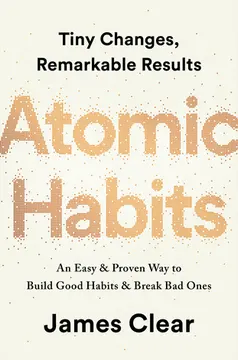
Atomic Habits: An Easy & Proven Way to Build Good Habits & Break Bad Ones -
Man's Search for MeaningViktor E. Frankl
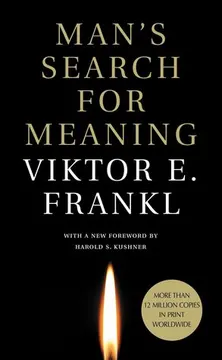
Man's Search for Meaning -
The Evolution of Everything: How New Ideas EmergeMatt Ridley
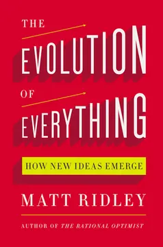
The Evolution of Everything: How New Ideas Emerge - One Man's View of the WorldLee Kuan Yew One Man's View of the World
-
Why Information Grows: The Evolution of Order, from Atoms to EconomiesCésar A. Hidalgo
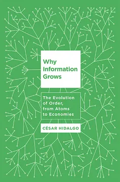
Why Information Grows: The Evolution of Order, from Atoms to Economies -
Influence: The Psychology of PersuasionRobert B. Cialdini
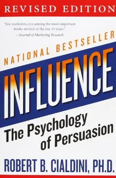
Influence: The Psychology of Persuasion -
The Psychology of Money: Timeless Lessons on Wealth, Greed, and HappinessMorgan Housel
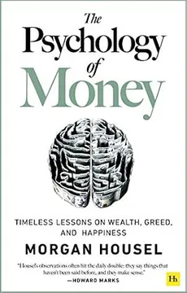
The Psychology of Money: Timeless Lessons on Wealth, Greed, and Happiness -
How to Fail at Almost Everything and Still Win Big: Kind of the Story of My LifeScott Adams
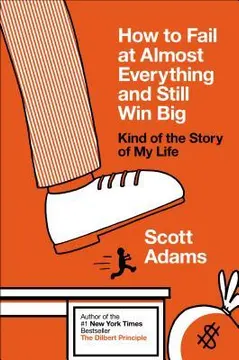
How to Fail at Almost Everything and Still Win Big: Kind of the Story of My Life -
The Lessons of HistoryWill Durant
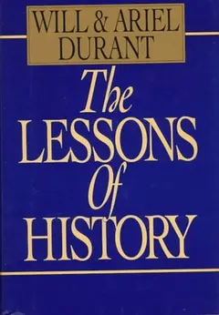
The Lessons of History -
The Courage to Be Disliked: How to Free Yourself, Change Your Life and Achieve Real HappinessIchiro Kishimi
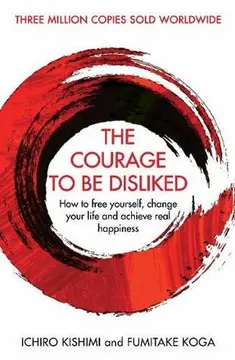
The Courage to Be Disliked: How to Free Yourself, Change Your Life and Achieve Real Happiness - The Hitchhiker’s Guide to the Galaxy (The Hitchhiker's Guide to the Galaxy, #1)Douglas Adams The Hitchhiker’s Guide to the Galaxy (The Hitchhiker's Guide to the Galaxy, #1)
-
PachinkoMin Jin Lee
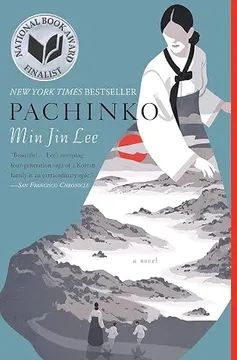
Pachinko - Brave New WorldAldous Huxley Brave New World
- SiddharthaHermann Hesse Siddhartha
- Memories of My Melancholy WhoresGabriel García Márquez Memories of My Melancholy Whores
-
Bootcamp BootlegThe d.school
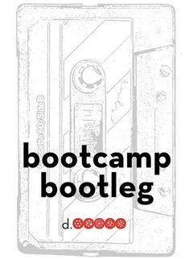
Bootcamp Bootleg - IDEO Method Cards: 51 Ways to Inspire DesignIDEO IDEO Method Cards: 51 Ways to Inspire Design
-
The Beginning of Infinity: Explanations That Transform the WorldDavid Deutsch
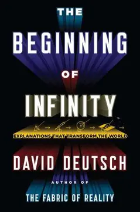
The Beginning of Infinity: Explanations That Transform the World -
Creativity, Inc.: Overcoming the Unseen Forces That Stand in the Way of True InspirationEd Catmull
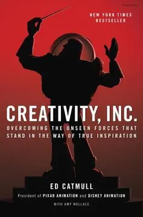
Creativity, Inc.: Overcoming the Unseen Forces That Stand in the Way of True Inspiration -
Principles: SummaryRay Dalio
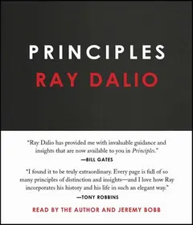
Principles: Summary - What I Talk About When I Talk About RunningHaruki Murakami What I Talk About When I Talk About Running
- It's Not How Good You Are, It's How Good You Want To BePaul Arden It's Not How Good You Are, It's How Good You Want To Be
-
Zero to One: Notes on Startups, or How to Build the FuturePeter Thiel
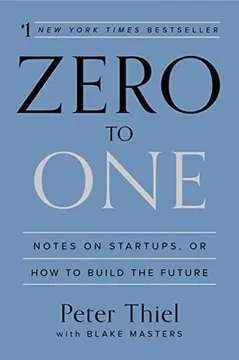
Zero to One: Notes on Startups, or How to Build the Future -
The Last LectureRandy Pausch
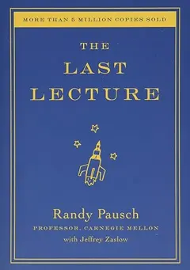
The Last Lecture -
Maths in Minutes: 200 Key Concepts Explained in an InstantPaul Glendinning
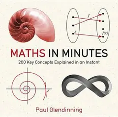
Maths in Minutes: 200 Key Concepts Explained in an Instant - Harry Potter and the Cursed Child, Parts 1 & 2John Tiffany Harry Potter and the Cursed Child, Parts 1 & 2
- The Tales of Beedle the Bard (Hogwarts Library, #3)J.K. Rowling The Tales of Beedle the Bard (Hogwarts Library, #3)
- Intercom on Customer SupportDes Traynor Intercom on Customer Support
-
Rules of Management: The Definitive Guide to Managerial SuccessRichard Templar
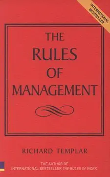
Rules of Management: The Definitive Guide to Managerial Success -
The Dip: A Little Book That Teaches You When to Quit (and When to Stick)Seth Godin
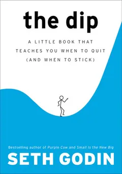
The Dip: A Little Book That Teaches You When to Quit (and When to Stick) - Colorless Tsukuru Tazaki and His Years of PilgrimageHaruki Murakami Colorless Tsukuru Tazaki and His Years of Pilgrimage
- Logo Design Love: A Guide to Creating Iconic Brand IdentitiesDavid Airey Logo Design Love: A Guide to Creating Iconic Brand Identities
- Intercom on Customer EngagementDes Traynor Intercom on Customer Engagement
- Intercom on Product ManagementIntercom Inc Intercom on Product Management
- After DarkHaruki Murakami After Dark
- On Seeing the 100% Perfect Girl on One Beautiful April MorningHaruki Murakami On Seeing the 100% Perfect Girl on One Beautiful April Morning
- The Brief Wondrous Life of Oscar WaoJunot Díaz The Brief Wondrous Life of Oscar Wao
- Twilight (The Twilight Saga, #1)Stephenie Meyer Twilight (The Twilight Saga, #1)
- The Elements of Style [Illustrated]William Strunk Jr. The Elements of Style [Illustrated]
- Harry Potter and the Half-Blood Prince (Harry Potter, #6)J.K. Rowling Harry Potter and the Half-Blood Prince (Harry Potter, #6)
- Harry Potter and the Prisoner of Azkaban (Harry Potter, #3)J.K. Rowling Harry Potter and the Prisoner of Azkaban (Harry Potter, #3)
- The Lightning Thief (Percy Jackson and the Olympians, #1)Rick Riordan The Lightning Thief (Percy Jackson and the Olympians, #1)
- Anansi BoysNeil Gaiman Anansi Boys
- What I Wish I Knew When I Was 20Tina Seelig What I Wish I Knew When I Was 20
- The Little PrinceAntoine de Saint-Exupéry The Little Prince
- The Catcher in the RyeJ.D. Salinger The Catcher in the Rye
- Sophie's WorldJostein Gaarder Sophie's World
- The Design of Everyday ThingsDonald A. Norman The Design of Everyday Things
- The Wind-Up Bird ChronicleHaruki Murakami The Wind-Up Bird Chronicle
- A Short History of Nearly EverythingBill Bryson A Short History of Nearly Everything
- WatchmenAlan Moore Watchmen
- Einstein’s DreamsAlan Lightman Einstein’s Dreams
- The White TigerAravind Adiga The White Tiger
- Steve JobsWalter Isaacson Steve Jobs
- Lords of Finance: The Bankers Who Broke the WorldLiaquat Ahamed Lords of Finance: The Bankers Who Broke the World
- The Golden Compass (His Dark Materials, #1)Philip Pullman The Golden Compass (His Dark Materials, #1)
- The Amber Spyglass (His Dark Materials, #3)Philip Pullman The Amber Spyglass (His Dark Materials, #3)
- The Arctic Incident (Artemis Fowl, #2)Eoin Colfer The Arctic Incident (Artemis Fowl, #2)
- The 7 Habits of Highly Effective Teens WorkbookSean Covey The 7 Habits of Highly Effective Teens Workbook
- IlustradoMiguel Syjuco Ilustrado
- Rizal Without the OvercoatAmbeth R. Ocampo Rizal Without the Overcoat
- Tess of the D'UrbervillesThomas Hardy Tess of the D'Urbervilles
- CK-12 Engineering: An Introduction for High SchoolCK-12 Foundation CK-12 Engineering: An Introduction for High School
- The Picture of Dorian GrayOscar Wilde The Picture of Dorian Gray
- China Business: The Rules of the GameCarolyn Blackman China Business: The Rules of the Game
- Y: The Last Man, Vol. 1: UnmannedBrian K. Vaughan Y: The Last Man, Vol. 1: Unmanned
- Not Even a Hint: Guarding Your Heart Against LustJoshua Harris Not Even a Hint: Guarding Your Heart Against Lust
- The Art of WarSun Tzu The Art of War
- The Bro CodeMatt Kuhn The Bro Code
- The Five People You Meet in HeavenMitch Albom The Five People You Meet in Heaven
- For One More DayMitch Albom For One More Day
- The Facebook Effect: The Inside Story of the Company That is Connecting the WorldDavid Kirkpatrick The Facebook Effect: The Inside Story of the Company That is Connecting the World
- The Traveler (Fourth Realm, #1)John Twelve Hawks The Traveler (Fourth Realm, #1)
- Memoirs of a GeishaArthur Golden Memoirs of a Geisha
- Y: The Last Man, Vol. 2: CyclesBrian K. Vaughan Y: The Last Man, Vol. 2: Cycles
- Y: The Last Man, Vol. 3: One Small StepBrian K. Vaughan Y: The Last Man, Vol. 3: One Small Step
- Harry Potter and the Deathly Hallows (Harry Potter, #7)J.K. Rowling Harry Potter and the Deathly Hallows (Harry Potter, #7)
- Kafka on the ShoreHaruki Murakami Kafka on the Shore
- El Filibusterismo (Noli Me Tangere, #2)José Rizal El Filibusterismo (Noli Me Tangere, #2)
- Ethics and Infinity: Conversations with Philippe NemoEmmanuel Levinas Ethics and Infinity: Conversations with Philippe Nemo
- Artemis Fowl (Artemis Fowl, #1)Eoin Colfer Artemis Fowl (Artemis Fowl, #1)
- The Lost Colony (Artemis Fowl, #5)Eoin Colfer The Lost Colony (Artemis Fowl, #5)
- Tuesdays with Morrie: An Old Man, a Young Man, and Life's Greatest LessonMitch Albom Tuesdays with Morrie: An Old Man, a Young Man, and Life's Greatest Lesson
- The Merchant of Death (Pendragon, #1)D.J. MacHale The Merchant of Death (Pendragon, #1)
- The Time Paradox (Artemis Fowl, #6)Eoin Colfer The Time Paradox (Artemis Fowl, #6)
- Harry Potter and the Order of the PhoenixJ.K. Rowling Harry Potter and the Order of the Phoenix
- South of the Border, West of the SunHaruki Murakami South of the Border, West of the Sun
- Hard-Boiled Wonderland and the End of the WorldHaruki Murakami Hard-Boiled Wonderland and the End of the World
- The Stinky Cheese Man and Other Fairly Stupid TalesJon Scieszka The Stinky Cheese Man and Other Fairly Stupid Tales
- How to Win Friends & Influence PeopleDale Carnegie How to Win Friends & Influence People
- The Google Story: Inside the Hottest Business, Media and Technology Success of Our TimeDavid A. Vise The Google Story: Inside the Hottest Business, Media and Technology Success of Our Time
- Harry Potter and the Sorcerer's Stone (Harry Potter, #1)J.K. Rowling Harry Potter and the Sorcerer's Stone (Harry Potter, #1)
- The Greatest Salesman in the WorldOg Mandino The Greatest Salesman in the World
- The Subtle Knife (His Dark Materials, #2)Philip Pullman The Subtle Knife (His Dark Materials, #2)
- A Walk to RememberNicholas Sparks A Walk to Remember
- Red Wired: China's Internet RevolutionSherman So Red Wired: China's Internet Revolution
- Harry Potter and the Goblet of Fire (Harry Potter, #4)J.K. Rowling Harry Potter and the Goblet of Fire (Harry Potter, #4)
- Harry Potter and the Chamber of Secrets (Harry Potter, #2)J.K. Rowling Harry Potter and the Chamber of Secrets (Harry Potter, #2)
- CoralineNeil Gaiman Coraline
- Who Moved My Cheese?Spencer Johnson Who Moved My Cheese?
- Love Story (Love Story, #1)Erich Segal Love Story (Love Story, #1)
- StardustNeil Gaiman Stardust
- Smoke and Mirrors: Short Fictions and IllusionsNeil Gaiman Smoke and Mirrors: Short Fictions and Illusions
- The World Is Flat: A Brief History of the Twenty-first CenturyThomas L. Friedman The World Is Flat: A Brief History of the Twenty-first Century
- Norwegian WoodHaruki Murakami Norwegian Wood
- The Lovely BonesAlice Sebold The Lovely Bones
- The Tipping Point: How Little Things Can Make a Big DifferenceMalcolm Gladwell The Tipping Point: How Little Things Can Make a Big Difference
- The Time Traveler's WifeAudrey Niffenegger The Time Traveler's Wife
- Flowers for AlgernonDaniel Keyes Flowers for Algernon
- Noli Me Tángere (Touch Me Not)José Rizal Noli Me Tángere (Touch Me Not)
- Point Blank (Alex Rider #2)Anthony Horowitz Point Blank (Alex Rider #2)
- Stormbreaker (Alex Rider #1)Anthony Horowitz Stormbreaker (Alex Rider #1)
- Revolting RhymesRoald Dahl Revolting Rhymes
- The Eternity Code (Artemis Fowl, #3)Eoin Colfer The Eternity Code (Artemis Fowl, #3)
- The Opal Deception (Artemis Fowl, #4)Eoin Colfer The Opal Deception (Artemis Fowl, #4)
- Eleven MinutesPaulo Coelho Eleven Minutes
- The Graveyard BookNeil Gaiman The Graveyard Book
- Predictably Irrational: The Hidden Forces That Shape Our DecisionsDan Ariely Predictably Irrational: The Hidden Forces That Shape Our Decisions
- Like the Flowing RiverPaulo Coelho Like the Flowing River
No books on this shelf.
Try another author, a shorter title, or a different filter.
Stars are my ratings. Unrated books are not zero-star books.